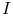
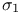
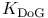
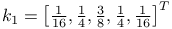
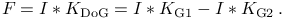
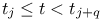
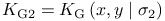

Difference-of-Gaussians filter
The difference-of-Gaussians filter is a feature enhancement algorithm in image processing which acts as a band-pass filter. The convolution kernel is formed as the difference of two Gaussian kernels
|  | (1) |
where the standard deviation , and the kernels
are given by 
and  .
The kernel size
.
The kernel size  and the standard deviations and
and the standard deviations and
 are user-specified parameters.
are user-specified parameters.
Although the kernel  is not separable, the filtered image can be obtained by subtracting two images filtered with Gaussian kernels having different standard deviations,
|  | (2) |
Detector threshold formula
Refer to Threshold to see how filter results can be used to dynamically find threshold value.
The two default variables and images filtered with each of the two gaussian kernels  and  are provided by this filter:
| DoG.I | current unfiltered image |
|---|---|
| DoG.F | current filtered image |
| DoG.G1 | current image filtered with |
| DoG.G2 | current image filtered with |
Generated by LaTeXML ![[LOGO]]()